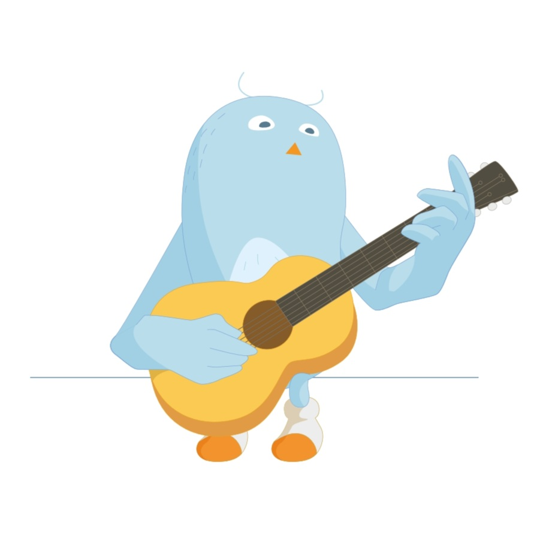

HAPPY BUDDY DAY !
00
:
00
pm
여행 성향 테스트 결과
감각적 경험주의자
즉흥적인 순간 감상자

당신은 여행 중 즉흥적인 순간을 즐기고, 그 경험을 감상하는 것을 중요시하는 여행자입니다. 외부 활동을 선호하면서도, 사진을 찍기보다는 그 순간을 편안히 즐기며 기억하려 합니다. 여행지에서 일어나는 자연스러운 순간에 집중하고, 그 느낌을 소중히 간직하는 스타일입니다.
Tips
현지에서만 할 수 있는 아웃도어 액티비티를 통해 특별한 순간을 만들어 보세요.
음식의 맛, 바람의 느낌, 소리 등 모든 감각을 기억에 새기며 특별한 순간을 즐기세요.
Best Spots
스위스 루체른: 고요한 자연 속에서 여유로운 순간을 즐길 수 있습니다.
일본 교토: 아름다운 사원과 전통적인 거리에서 느긋하게 시간을 보낼 수 있습니다.
포르투갈 리스본: 해변과 도시의 멋진 풍경을 즉흥적으로 즐기기 좋은 곳입니다.